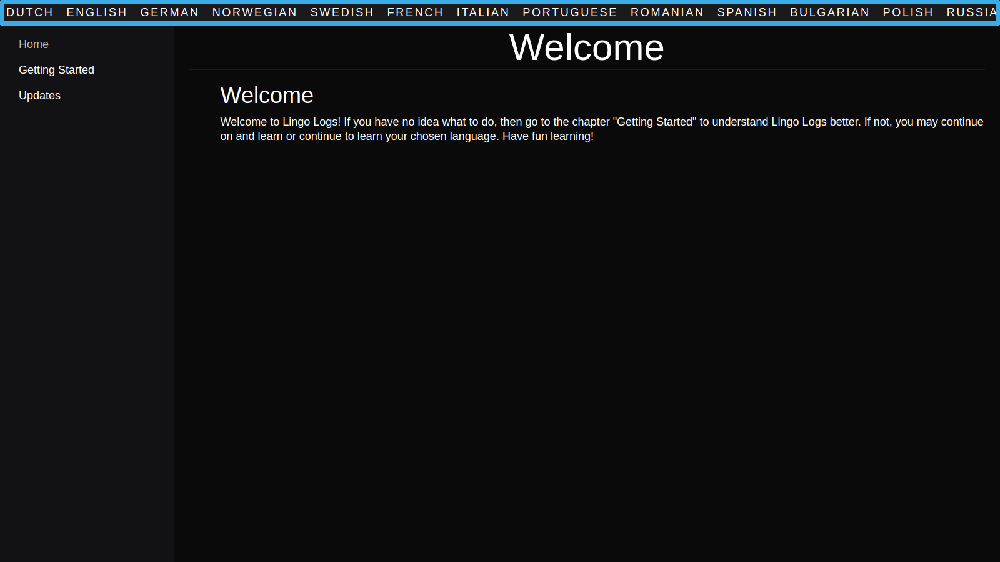
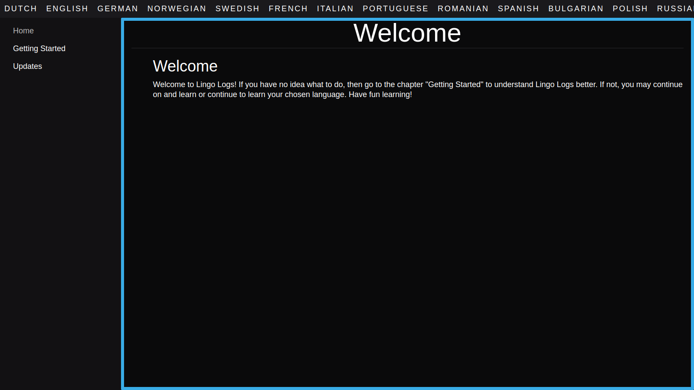

Indepth Guide
Language Navbar
The Language Navbar will be one of the most necessary tool when it comes to learning a language. Since you won't be able to access a language any other way. Its this way so you can access a language documentation form where ever to help you.
Now when you first see it, it can be confusing but once you understand its a great tool. When you hover over it you can use your scroll wheel to scroll through the languages until you find your target language. If your on a phone or tablet you can swipe to the right or left for it to work. This allows us to let you access and see languages without them taking up to much space.
Once you click on the language you want to learn it will take you to the page and the language on the navbar will be darkened and underlined to tell you that your currently in that language. From there you can use the sidebar to access the different chapters that that language offers. If you do click on the language again it will do nothing.
Chapter Sidebar
The Chapter Sidebar is how you will access all the lessons in the given language or necessary pages in other sections. This will be the easier thing to learn since every chapter is named after the content that is in it. Like with the Language Navbar this is the only way to access the given page content.
The way to use the Chapter Sidebar is to click on the link of the page you want to go to. The link of the page your currently on will be greyed out so you know where you are. If the links go further down then the sidebar then a scrollbar will appear to signify that there is more chapters then visible.
When you click on the chapter's link it will take you to its linked page. The page will contain all the information that you will need to know. This can be through text, images, tables, linked audio, etc. The pages content might not contain examples from other pages when your language. Though there will be a chance that other content that will be taught in other pages will be there to help teach.
Page Content
When you finally make it to the page that you want to view. There may be a lot of stuff on the page making it over whelming to new users but it will all make sense. The page content is the stuff that you need to understand sense without it why are you here. Its literally the only thing that might teach you how to speak the language you want to learn.

So what dose the page contain that you will need to learn. Well first text, this is going to be the most common way to explain the quirks of a language. This can and might also be the way that you also learn words. In reality you want to understand how to read the words and not feel hopeless. Next second images, this will be used to attract attention or for word-picture association. They really wont be used for anything else other than that. Now third tables, this will be one way where you will learn new words in mass or for conjugations of words. Lastly linked audio, this will be everywhere so that you can hear what the language will sound link. This will help with communication. Thats all for now though!